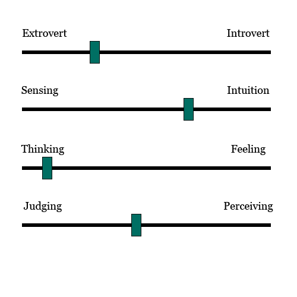
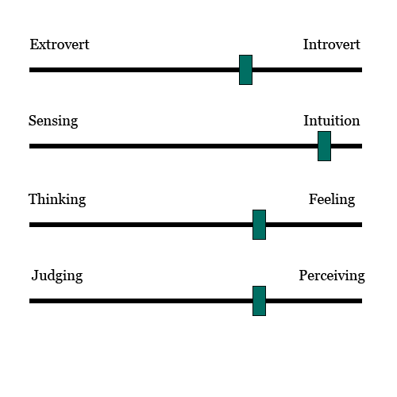

Requirements
Background
Here you can find out what are project is all about
Ammoenio (which translates as “invest” from Latin) is an online platform used for share-trading based crowdfunding and built with Blockchain technology. It helps individuals get into the share-trading business whilst it allows start-ups and small businesses fund their projects by selling part of their shares in the business to individuals willing to invest into it.
The app offers three main components: starting projects and issuing shares, investing into companies (buying shares), trading of shares between individuals. Using Smart Contract functionality, the full investor related process is automated including the issuing and processing of dividend payments, AGM voting and future rights issues.
Combining so many features, Ammoenio is the ultimate tool for disrupting conventional business models and the share-trading markets whilst also bringing innovation like never seen before into the way companies are being run.
Client and Possible Future Parteners
Here you can read about our client and possible companies we could make parterships in the future.

Atos Int. has been our client for this project. We have communicated with them through Mr. John Hall, Head of Strategy & Portfolio at Atos International, as well as though Mr. Mike Smith, the Chief Technology Officer at Atos.
Digital Ocean is our provider of hosting services. A partership with them would be beneficial in the future so that we could deploy multiple virtual machines at the same time with several load balancers redirecting trafic between the servers.
Cloudflare is our provider of DNS routing and SSL certificates. Cloudflare also provies us encryption, firewall, traffic management, access rules, static pages and DDoS protection. A partership with Cloudflare would be advantegous for Ammoenio once we start using multiple virtual machines.
The Problem
Here you can find out what are the problems Ammoenio is aiming to solve
We live in world of entrepreneurship and ideas. More and more young people are looking to bring their ideas to life and start their own businesses. Unfortunately, many start-up initiatives lack the funding they need to actually get started. While crowdfunding through donations already exists, most people do not want to invest dozens or hundreds of pounds just to have their name written somewhere. That is why most donations are very low and if not enough people are interested in donating, many fundings either fail short of achieving their goal or have to set quite some modest goals.
Equity crowdfunding changes all of that. Through Ammoenio, individuals get their own shares into the business which will later generate income either through dividends or through the sale of shares, whilst also having voting rights (dependent on the amount of owned shares) into the decisions of that company. Individuals are therefore much more interested in investing and companies have much higher chances of gathering the required money and achieving their goals.
The reason why individuals want to invest into companies and buy shares is quite simple: because it is one the best ways to save money whilst also making a profit out of them (according to moneyexpert.com and citizensadvice.org.uk). We live in a world where extremely low bank deposits interest rates are making people having to look for new ways to save money. The best way to do that is investing. Compared to traditional saving through bank deposits, investing has its risks, but if the company is successful, the financial rewards will be very large and more than worth the risk. That is why the best practice when investing is to invest in multiple companies.
For those individuals wanting to invest into a company, but are afraid of investing in start-ups, Ammoenio also allows buying shares into already existent and running companies. This means a much lower risk of losing the investment, but also a smaller income for the individual.
Once the individual has acquired some shares, he/she will make an income each time dividends are issued. Dividends will grant each individual an income from the profit of the company proportional to the number of shares they own.
If waiting for dividends is not the individual’s preferred way of generating income, he/she can also use the share-trading feature. This way, the individual buys a share when its value is down while anticipating an increase in value at a later date. Selling the share at a higher value will generate income for the individual, while when owning that share, the individual also gets income from any dividends issued by the company. To help with this second way of generating income, Ammoenio provides users with tools that enable them to see how the value of the shares is changing over time. This will allow users to know when is the best time to buy a share and when to sell it.
Requirements Gathering
Here you can find out about how we gathered the requirements
First stage was researching the Blockchain technology and its possible uses. This took us about 2-3 weeks and it allowed us to get a much better understanding of what Blockchain is, how the technology works and where it can be applied, but also which are the current problems on the market relating to blockchain.
Next we started brainstorming and comming up with a diverse range of ideas over a period of 3 weeks which we presented to our client.
Finally, both us and our client decided on an idea: Ammoenio. This was done after resaerching the market, looking at problems, looking at possible competitors (such as Seedrs and CrowdCube).
We have then continued to update our requirements depending on the seconds stage of research we have done and after talks with our client and with our TA.
We have also held discussions with a number of aproximatly 10-15 of our colleagues both in the early stages and in late stages of the project in order to get a better idea of how our design should look like. This was very useful as we came back a large number of times over the design and improved things.
MoSCoW Method
(I) = Requirements for investor users
(B) = Requirements for business users
(F) = Functional requirements
(N) = Non-functional requirements
| Must Have | Should Have | Could Have | Would Have |
|---|---|---|---|
| (B) (F) The ability to create companies and issue initial shares. | (I) (F) Ability to trade shares between investors. | (F) Real time conversion mechanism from GBP to ETH and back. | (I) (F) The ability to vote in company decisions. |
| (I) (N) See all the user's investments in one place. | (B) (F) Ability to issue more shares. | (N) Use caching so that website loads faster. | (B) (F) The ability to issue dividents. |
| (B) (N) See all the user's companies in one place. | (N) Deploy website on the World Wide Web. | (N) Use SSL ceriticates. | (I) (F) The possibility to buy different kinds of stocks such as preferential shares or convertible shares. |
| (I) (F) Browse through companies on the platform. | (N) Enforce HTTPS connections. | (N) Different types of business models such as reverse vesting. | |
| (N) Easy to access and see company data. | (N) Get our own domain name. | ||
| (N) All trannsactions should be done via Blockchain and smart contracts using Ether (ETH) so that data is immutable, safe and secure. | |||
| (N) Interactive, responsive, easy to use interface. |
Personas
Here you can read about our proposed personas.
The Business User
 "I want to start my own technology company!"
"I want to start my own technology company!"
Motivation
This young adult wishes to start his own company, but does not have the funds to do so. They have looked around for sponsors but could not convince anyone that their million-dollar idea would work. He wants to find a way to collect money to found his company in a secure way which will not give him restrictions.
Name:
Thom Griffin
Age:26
Occupation:Entrepreneur
Goals
- Found a company
- Raise funds for his company
- Show his business to the world
- Use a secure system for crowdfunding
- Finding money is very difficult
- Can't get any sponsors
- Does not know of another way to raise money

The Investor
 "I was always interesting in buying shares, but the fees are too expensive"
"I was always interesting in buying shares, but the fees are too expensive"
Motivation
Carla wants to invest in companies in return for shares, but she is held back by the expensive cost of share-trading. She also wishes to help small businesses grow if she can, while having a percentage of the company herself.
Name:
Carla Johnson
Age:30
Occupation:Freelancer
Goals
- Invest in companies
- Help small companies grow
- Discover companies that fit her interests
- Maintain her anonymity when investing in companies
- Buying shares is expensive
- Finds it difficult to discover companies that interest her
- Has tried other crowd-funding websites but does not like them.

User Cases
Here you can read about how each type of user can use our platform
Ammoenio has two primary use cases. It targets both individuals who want to get into the share-trading business and start-ups or small businesses that wish to fund their projects by selling part of their business’s shares to individuals willing to invest into it.
Investors
Users who want to invest can sign up with an investor account. From there, the user can browse the website to see which companies are available on the platform, either from the dashboard or by searching for a specific company. Clicking on a company, the user can see information about it including number of shares available for sale, legal documents, what kind of business it is and more.
A user can choose to buy shares for a specific company by specifying the amount of money (in British Pounds) they want to spend. The platform then calculates how many shares the user can buy with that amount of money, also showing how much the gas transaction, pounds (GBP) to Ether (ETH) conversion and Ammoenio commission will cost. If the user confirms, the purchase is performed and the blockchain is updated with new values, providing the user with the purchased shares.
An investor then has the ability to make their shares public by putting them on the market for sale. By going to the “My Investments” section and choosing a company the user has invested in, they have an option to specify the number of shares they want to sell. This will appear under the company’s profile when another user previews it, providing the option to buy shares both directly from the company and from other users.
Business Owners
Users who wish to start their own business and fund it using our platform can sign up with a business account. From there they can create a new company profile, by providing information such as name, description, legal documents, proof of existence, number of shares they want to start with etc. The company will then be created on the blockchain and will be displayed on the dashboard.
The owner of the company can then create more shares if they want, which means the proportion of shares/company ownership will change. Furthermore, an owner can buy shares from their own company which will be registered as ‘Director Shares’. We allow a business user to create multiple companies on Ammoenio if they wish to.